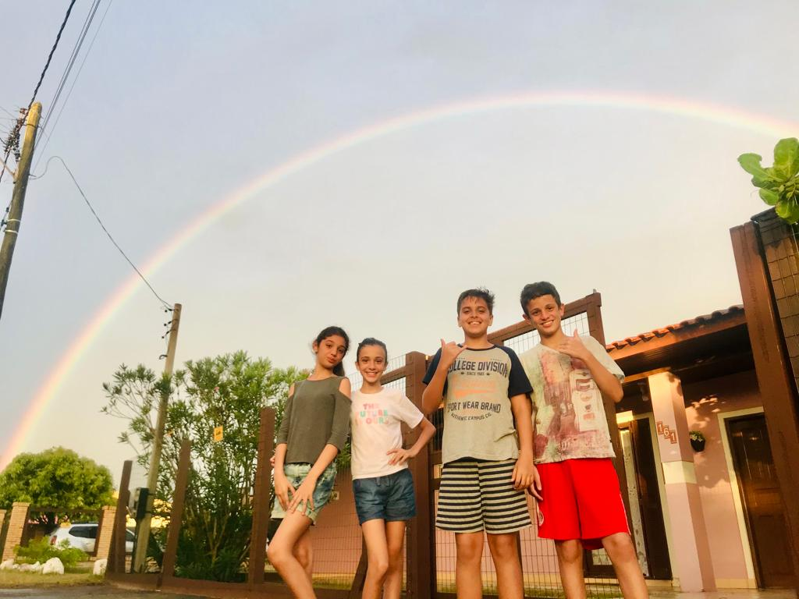
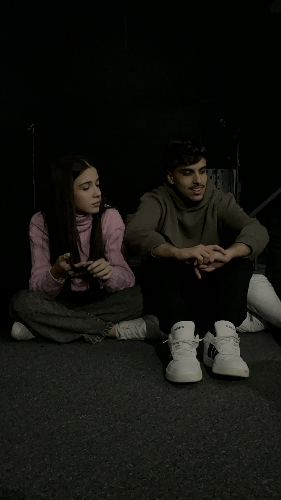
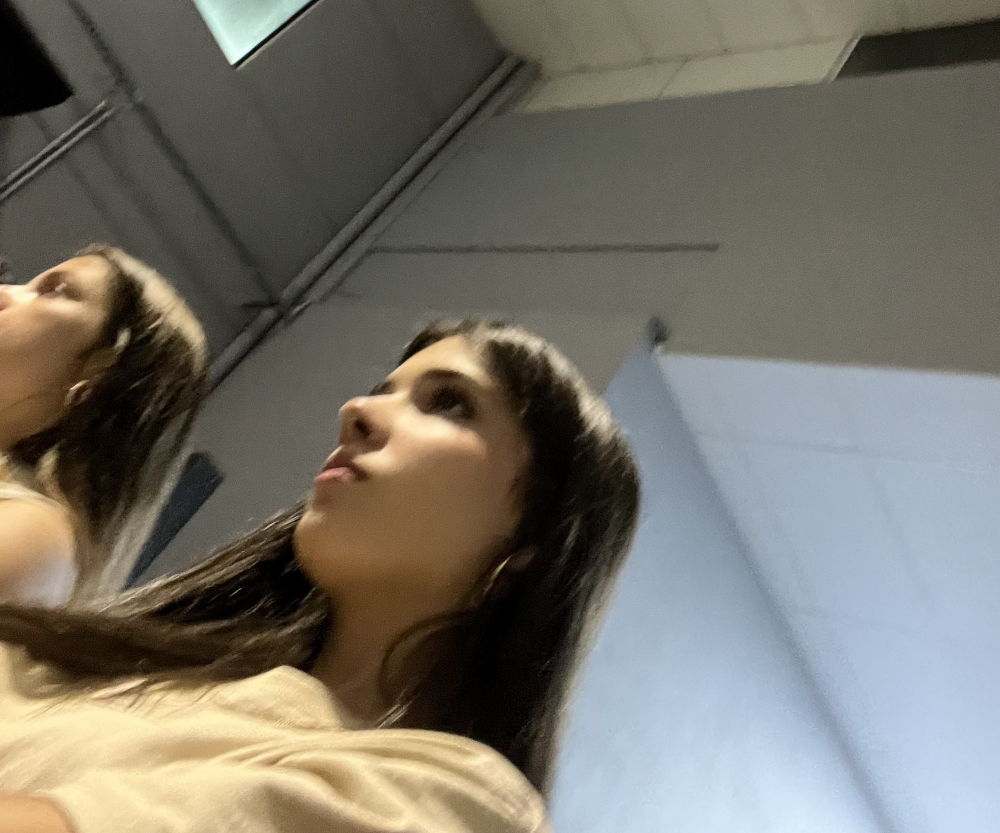
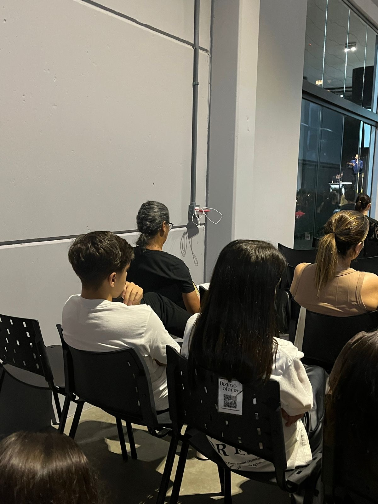
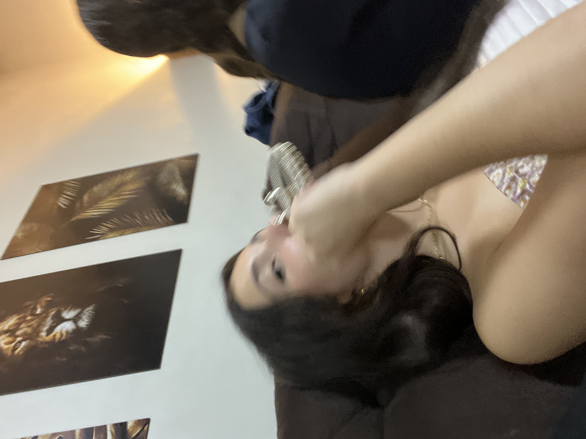
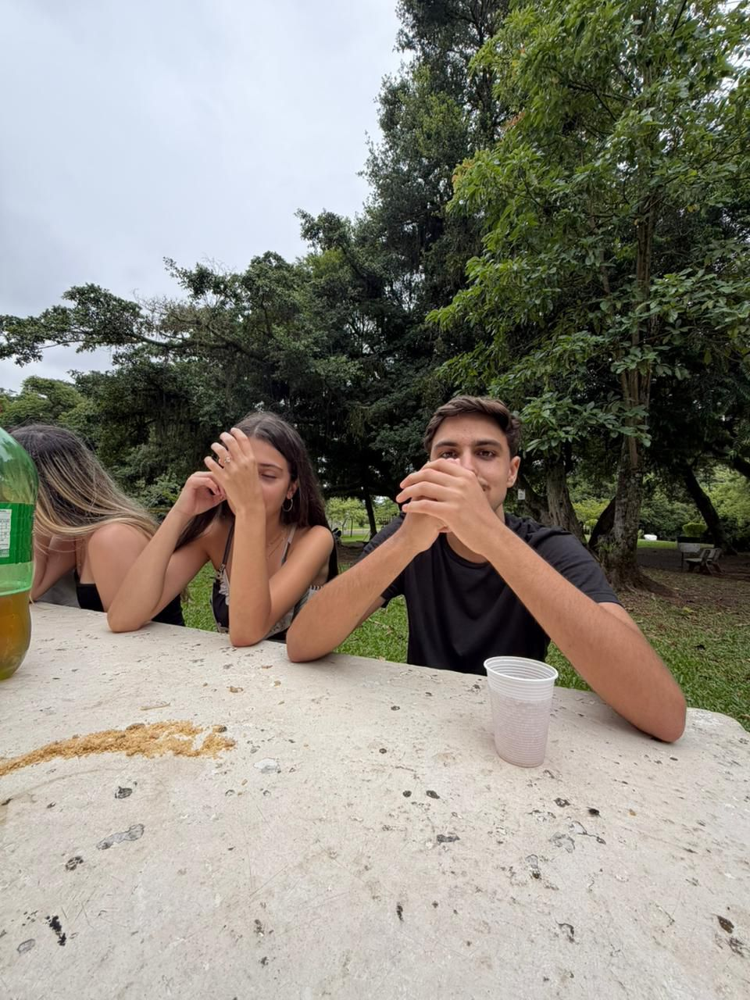
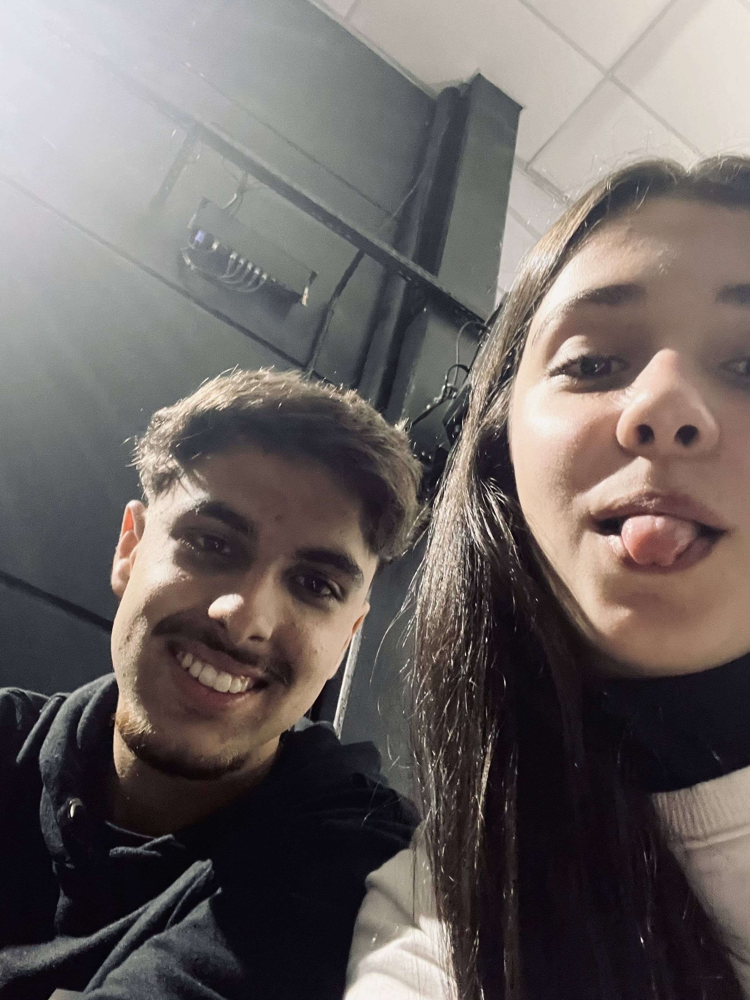
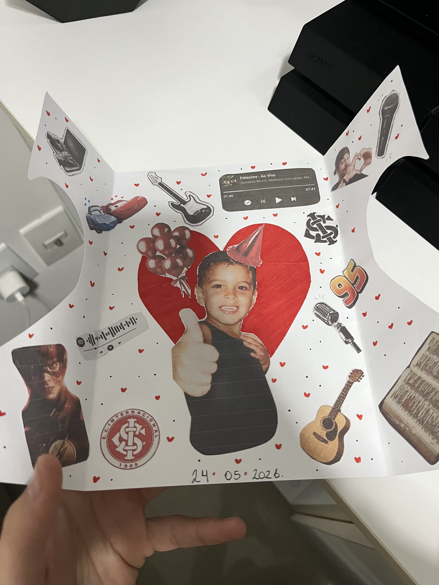
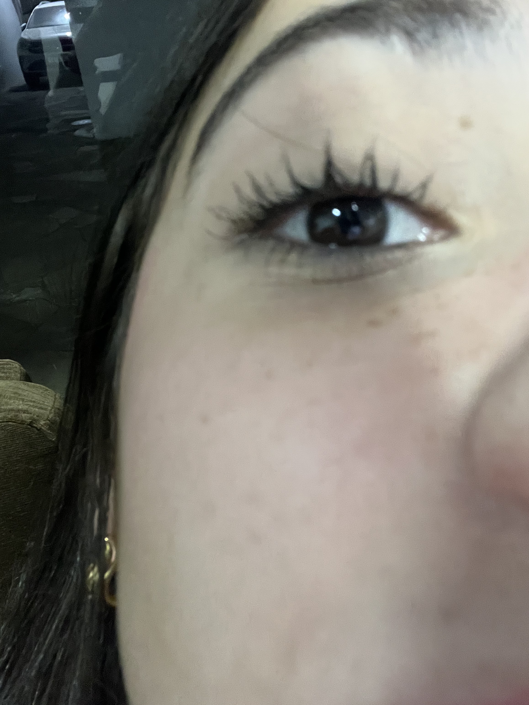

O Gabriel nunca soube explicar exatamente quando começou. Tipo… não tem uma data específica, nem um momento exato que ele consiga apontar.
Mas tem uma certeza que sempre esteve ali:
você é especial.
✦ uma história real ✦


Gabriel & Ana
Eclesiastes 3:1
dedicatória
Ana,
isso tudo é pra ti
tu mora no meu coração
eu te amo!
com amor, Gabriel
clica aqui quando precisar lembrar ♡
Melhor que nos Livros
Lembrançascoisas que eu lembro de você
Essas coisas pequenas que talvez você nem perceba,
mas que pra mim sempre fizeram diferença.
Eu lembro do teu jeito de sorrir. Daquele sorriso todo envergonhado que tu faz quando te elogio.
Do teu jeito de falar. A forma como você conta as coisas, é tão bom de ouvir
Coisas que eu lembro de você
Dos momentos na igreja, principalmente agora que cantamos juntos.
De cada momento que estou contigo. Eles são especiais pois do teu lado tudo fica melhor.
Do teu jeito de ser, a forma que tu trata os outros, a forma que tu se empenha e se dedica, me deixa impressionado.
Melhor que nos Livros
UmCapítulo 01
O Gabriel nunca soube explicar exatamente quando começou. Tipo… não tem uma data específica, nem um momento exato que ele consiga apontar.
Mas tem uma certeza que sempre esteve ali:
Lá em 2019, quando eles ainda eram só duas crianças que quase não se falavam, já tinha alguma coisa diferente. Não era intenso. Não era declarado. Mas era real.
Capítulo 1 — Antes de tudo
E o mais engraçado? Todo mundo percebia.
Menos eles.

Aquela época em que dois corações ainda não sabiam que já tinham se encontrado.
Melhor que nos Livros
2020Capítulo 02
Então veio 2020. E com ele, a distância. A pandemia afastou os dois sem que eles pudessem fazer nada.
Cada um seguiu sua rotina, sua vida, seus dias… e o contato simplesmente parou.
Porque algumas coisas não acabam. Só ficam em pausa.
Capítulo 2 — Quando o tempo separa
E foi exatamente isso que aconteceu com eles. A pausa que nenhum dos dois pediu — mas que os dois precisaram aguentar.
O tempo passou. O sentimento ficou.
Melhor que nos Livros
Três ✦ ponto de vista do GabrielCapítulo 03
Eu sempre senti. Isso nunca foi o problema.
O problema era mostrar.
Tipo o dia do bombom. Pra qualquer pessoa, é só um doce. Mas pra mim… era tipo um plano inteiro.
Hoje eu rio disso.
Mas na época… era o máximo que eu conseguia.
Capítulo 3 — Eu não sabia demonstrar

Não era falta de vontade. Era medo. Medo de fazer errado. Medo de estragar algo que já era importante demais.
Melhor que nos Livros
QuatroCapítulo 04
Teve também aquele dia na igreja. Ele sentou do lado dela. Pra qualquer pessoa normal, isso não significa nada.
Mas pra ele? Significava tudo.
Ele começou a reparar em cada detalhe. Cada movimento. Cada gesto.
Capítulo 4 — Pequenos detalhes

Era ali, nesses momentos pequenos, que tudo fazia sentido.
Melhor que nos Livros
2023Capítulo 05
2023 chegou… e trouxe a parte mais difícil.
Ela disse que não sentia mais aquilo. Que talvez tivesse sido mais emoção.
E aquilo quebrou ele de um jeito que ele nunca tinha sentido antes.
E o pior não foi só ouvir aquilo… foi perceber que ele não podia fazer nada.
Capítulo 5 — Quando tudo desaba

Pra ele nunca foi só emoção. Nunca foi algo que passa.
Era certeza. Sempre foi.
Melhor que nos Livros
2024 ✦ ponto de vista do GabrielCapítulo 06
2024 foi… estranho. Não teve briga. Não teve fim oficial. Mas foi pior.
Ela começou a gostar de outra pessoa. E eu continuei ali. Apoiando. Agindo normal.
Mas não tava normal.
Capítulo 6 — Eu fiquei, mesmo assim
Tinha noite que eu ficava pensando em tudo. E às vezes eu chorava. Quieto. Sem ninguém saber.
Porque eu nunca fui de falar essas coisas.


E mesmo assim… eu não consegui ir embora.
Melhor que nos Livros
SeteCapítulo 07
A vida continuou. Eles conheceram outras pessoas. Tiveram outras histórias.
Mas nada parecia certo. Era como tentar encaixar algo que quase funciona… mas nunca completamente.
Capítulo 8 — O ponto de virada
2025Capítulo 08
2025 começou como qualquer outro ano.
Mas virou tudo.
Gabriel percebeu que podia perder ela de vez. E isso mudou tudo.

Porque dessa vez ele não quis só sentir. Ele quis mostrar.
Melhor que nos Livros
Nove ✦ ponto de vista do GabrielCapítulo 09
Eu não sei dizer exatamente quando virou a chave. Mas virou.
Eu comecei a pensar:
E isso me deu um medo absurdo. Então eu comecei a fazer diferente. Me aproximar mais. Conversar mais. Estar mais presente.
Sem pressão. Só… sendo eu.
Capítulo 9 — Eu não queria perder ela
Melhor que nos Livros
DezCapítulo 10
E então veio algo que parecia impossível.
Ela tava pensando em voltar a gostar dele.
Por fora, Gabriel tentou se fazer de tranquilo.
Mas por dentro?
Capítulo 10 — A notícia
Era tipo ver uma oração sendo respondida. Tipo perceber que talvez aquilo tudo não tivesse sido à toa.
Que cada espera, cada silêncio, cada lágrima escondida tinha levado até ali.
A história ainda não tinha terminado. Ela só estava chegando em uma parte nova.
Melhor que nos Livros
OnzeCapítulo 11 · 19 de abril
No dia 19 de abril, aconteceu algo que Gabriel nunca ia esquecer.
Era culto jovem. E, de alguma forma, aquele dia parecia ter sido escrito com um cuidado diferente.
Ele cantou. Ela cantou. E por alguns minutos, parecia que tudo ao redor tinha ficado menor.
A música era Dono da Minha Afeição, da FHOP. E quando chegou a ponte, Gabriel fez um solinho.
Capítulo 11 — Nossas vozes
Não só porque a música era bonita. Mas porque as vozes deles combinaram de um jeito que ele não sabia explicar.
Ela não sabia muito bem a hora de entrar. Então olhou pra ele. E Gabriel fez um sinal.
Um sinal simples. Mas que, pra ele, virou lembrança.
Porque às vezes os momentos mais marcantes não são os mais ensaiados. São aqueles pequenos segundos em que tudo acontece naturalmente.
Melhor que nos Livros
DozeCapítulo 12
Depois que eles terminaram de cantar, desceram do púlpito. E o pessoal começou a falar.
Disseram que a música tinha ficado perfeita. Que as vozes tinham combinado. Que ficou lindo.
Mas Gabriel já sabia disso antes de qualquer pessoa falar. Porque ele tinha sentido.
Capítulo 12 — Um sonho no púlpito
Ele estava realizando o sonho de cantar. E mais do que isso: estava cantando com ela.
A voz dela deixava ele ainda mais apaixonado do que ele já era. E isso parecia impossível.
Naquele dia, eles ainda tentaram fazer uma trend. Não deu muito certo. Na verdade, deu meio errado.
Depois, eles conseguiram tirar uma foto da guitarra e do microfone. Pra qualquer pessoa era só isso. Mas pra ele? Era um pedaço daquele dia.
Melhor que nos Livros
Treze ✦ ponto de vista do GabrielCapítulo 13
Eu não sei se ela entendeu o tamanho daquele dia pra mim.
Cantar já era especial. Mas cantar com ela… era diferente.
Eu tava ali, no culto jovem, fazendo algo que eu amo. E do meu lado estava a pessoa que eu amo.
A voz dela entrou na música e parecia que tudo ficou mais bonito. Não era só técnica. Era ela.
Capítulo 13 — Eu estava realizando um sonho
Porque naquele segundo, parecia que a gente tava conectado. Como se eu soubesse o que ela precisava. E ela confiasse em mim pra entrar.
Talvez pra outra pessoa isso não fosse nada. Mas pra mim foi muito.

Melhor que nos Livros
QuatorzeCapítulo 14 · 24 de maio
No dia 24 de maio, Gabriel terminou algo que já vinha crescendo dentro dele há um tempo.
Um livro. Mas não só um livro. Um livro em formato de site. Porque ele era programador.
E talvez esse fosse o jeito mais Gabriel possível de dizer o que sentia.
Capítulo 14 — O livro dentro do livro
Era tudo que ele sentia tentando virar alguma coisa que ela pudesse ler, ver e sentir.
E enquanto fazia, ele chorou. Chorou de emoção.
Porque parecia impossível acreditar que tudo aquilo estava acontecendo. Depois de tanto tempo. Depois de tanta espera. Depois de tanta coisa guardada.
Gabriel só conseguia pensar em como Deus tinha sido bom com ele.
Melhor que nos Livros
QuinzeCapítulo 15 · domingo, 24 de maio
Era domingo. Antes do culto, Gabriel terminou o livro.
Ele contou pra Ana que tinha feito algo pra ela. Que ia mandar. E ela já ficou toda feliz. Do jeito dela.
Depois do culto, ele chegou em casa, jantou, transformou o site em um link. E mandou.
Capítulo 15 — A entrega
Ela demorou uns trinta minutos pra responder. E nesses trinta minutos, Gabriel provavelmente pensou em tudo.
Será que ela gostou? Será que ficou demais? Será que eu exagerei?
Até que veio a primeira mensagem.
Quando alguém começa uma mensagem só com o seu nome em letra maiúscula, existem duas possibilidades: ou deu muito certo, ou deu muito errado.
Era o contrário do que ele tinha medo. Ela não sabia como agradecer. Disse que estava perfeito. Disse que tinha se trancado no banheiro pra ver. E que chorava enquanto lia.
Melhor que nos Livros
DezesseisCapítulo 16
Naquela conversa, Ana se abriu. Do jeito dela.
Disse que Gabriel era muito especial pra ela. Disse que não sabia como agradecer. Mas que realmente tinha amado.
Dentro do livro, Gabriel tinha colocado uma página secreta. E naquela página estava escrito:
Ana ainda não tinha visto. Mas quando viu, algo aconteceu.
Capítulo 16 — Eu te amo
E Gabriel respondeu: "eu te amo."
Foi a primeira vez em todos aqueles anos que eles disseram isso um para o outro. Depois de 2019. Depois da distância. Depois dos silêncios. Depois de tudo.
Eles falaram que eram um sonho realizado um do outro. E Ana disse algo que Gabriel nunca ia esquecer: que estava vivendo algo melhor que nos livros dela.
Melhor que nos Livros
Dezessete ✦ ponto de vista do GabrielCapítulo 17
Eu lembro de mandar o link. E lembro de esperar. Aqueles trinta minutos pareceram uma eternidade.
Porque não era qualquer coisa. Era o meu coração ali. Em forma de site. Em forma de tudo que eu nunca consegui dizer direito.
Quando ela mandou "GABRIEL", eu gelei. Achei que tinha dado errado.
Capítulo 17 — O dia em que eu chorei junto com ela
Ela tinha entendido. Ela tinha sentido. Ela tinha amado.
E quando ela disse que se trancou no banheiro pra ver e começou a chorar, eu também chorei.
Porque pela primeira vez parecia que não era só eu carregando tudo. Era nós dois. A gente chorou junto.
Foi 2019. Foi 2020. Foi 2023. Foi 2024. Foi cada medo, cada silêncio, cada oração. Tudo cabia naquelas três palavras.
Melhor que nos Livros
DezoitoCapítulo 18
No dia seguinte, Gabriel teve uma conversa com o pai. Uma conversa que ele nunca tinha tido daquele jeito.
O pai dele falou que ele e a mãe amavam Ana. Disse que ela era diferente. E até falou que ela era bonitinha.
Gabriel riu. Porque vindo de pai, até isso virava um momento marcante.
Capítulo 18 — Uma conversa de futuro
O pai disse que Gabriel precisava deixar claro pra Ana. Que, quando chegasse o tempo certo, depois que ela fizesse 18 anos, ele queria começar um namoro com ela. Um namoro cristão. Com propósito. Com Deus no centro.
Então Gabriel foi falar com Ana. E dessa vez ele disse com todas as letras o que queria.
Não estava no papel. Mas estava no coração. Eles estavam compromissados um com o outro. E ainda brincaram: "falta um ano e dois meses."

Melhor que nos Livros
Dezenove ✦ ponto de vista do GabrielCapítulo 19
Eu nunca tinha falado com meu pai daquele jeito. Não sobre isso. Não sobre Ana. Não sobre futuro.
Ouvir ele dizendo que ele e minha mãe amavam ela mexeu comigo. Porque não era só coisa da minha cabeça.
Meu pai disse que ela era diferente. E eu já sabia. Mas ouvir isso dele fez tudo parecer ainda mais real.
Capítulo 19 — Eu vejo meu futuro com ela
Eu vejo meu futuro com ela. Quero fazer certo. Quero esperar o tempo certo. Quero um namoro cristão. Quero construir algo que agrade a Deus.
E quando eu falei isso pra ela, eu tava com medo. Mesmo depois de tudo, eu tava com medo. Mas ela disse que também queria.
Por trás da brincadeira de "falta um ano e dois meses", tinha uma promessa silenciosa.

Melhor que nos Livros
VinteCapítulo 20 · 7 de junho
No domingo, dia 7 de junho, aconteceu outro momento que Gabriel guardaria de um jeito diferente.
Naquela tarde, ele estava estranho. Pensativo. Com muita coisa na cabeça. Era algo pessoal. Algo que ele não costumava mostrar pra ninguém.
Gabriel sempre foi fechado pra esse tipo de coisa. Ele guardava. Disfarçava. Seguia.
Capítulo 20 — A primeira que percebeu
Antes de qualquer explicação. Antes de qualquer frase. Antes dele dizer que tinha algo errado.
Ela percebeu. E isso, pra Gabriel, significou muito.
Porque quando alguém percebe o que você tenta esconder, talvez essa pessoa esteja olhando com mais cuidado do que o resto do mundo.
Não era só sobre contar um problema. Era sobre confiar. Era sobre deixar alguém entrar em uma parte dele que quase ninguém conhecia.
Melhor que nos Livros
Vinte e um ✦ ponto de vista do GabrielCapítulo 21
Eu nunca fui bom em falar quando eu tô mal. Eu guardo. Finjo que tá tudo normal. Faço piada. Mudo de assunto. E sigo.
Mas naquele dia eu não tava bem. E ela percebeu.
Isso me quebrou de um jeito bom. Porque eu tentei disfarçar. Mas ela percebeu mesmo assim.
Capítulo 21 — Eu consegui me abrir
Então eu chamei ela. E falei. Do meu jeito. Talvez meio travado. Talvez sem saber explicar direito. Mas falei.
E ela me escutou. Só isso já significou muito.
E naquele momento, eu tive mais certeza ainda. É ela.

Melhor que nos Livros
Vinte e doisCapítulo 22 · 7 de junho
Naquele mesmo domingo, aconteceu outra primeira vez.
Eles já tinham dito "eu te amo" por mensagem. Na página secreta. Naquela conversa que fez os dois chorarem.
Mas agora foi diferente. Porque dessa vez foi pessoalmente.
Capítulo 22 — Pessoalmente
Porque algumas palavras mudam quando são ditas de perto. Elas deixam de ser só texto. Elas viram voz. Viraram presença. Viraram coragem.
O menino que antes mal sabia demonstrar. Que mandava bombom por outra pessoa. Que sentia demais e falava de menos. Que tinha medo de estragar tudo.
Agora estava ali. Se abrindo. Falando. Amando com mais coragem.

Melhor que nos Livros
Vinte e trêsCapítulo 23
Alguns dias ficam marcados por acontecimentos enormes. Outros ficam marcados por coisas simples. E, às vezes, são justamente esses que acabam se tornando os mais especiais.
Naquela noite, Gabriel e Ana assistiram juntos ao primeiro jogo do Brasil na Copa do Mundo de Clubes. Foi na casa de uma amiga da igreja.
Não era um encontro planejado. Não tinha nenhuma grande declaração. Nenhum acontecimento extraordinário.
Capítulo 23 — Um jogo qualquer
Eles sentaram um ao lado do outro. O jogo acontecia. As pessoas assistiam. Mas, para Gabriel, a melhor parte da noite estava sentada ao seu lado.
Teve comemoração de gol. Teve risada. Teve brincadeira. Em algum momento, Ana acreditou que conseguiria bater o recorde de Gabriel no Block Blast. Ela tentou. Tentou de novo. Mas não conseguiu.
E isso virou motivo de risada. Mais uma daquelas pequenas disputas que não importavam de verdade. Mas que, por algum motivo, acabavam se tornando lembranças.
Não importava o que estavam fazendo. O lugar. O evento. Porque, de alguma forma, estar com Ana sempre fazia qualquer momento parecer melhor.

Melhor que nos Livros
Vinte e quatroCapítulo 24 · 19 de junho
No dia 19 de junho, Gabriel comemorou seu aniversário com alguns amigos da igreja. O aniversário oficial seria apenas no dia seguinte. Mas aquela noite já seria especial por si só.
Tinha comida. Tinha conversa. Tinha amigos. E tinha ela.
Quando Ana chegou, cumprimentou todo mundo. Um por um. Até chegar nele.
Capítulo 24 — O primeiro abraço
Não daqueles rápidos que acontecem por educação. Não daqueles que duram apenas um segundo. Um abraço sincero. Um abraço que parecia dizer muito mais do que qualquer frase.
E por alguns instantes, Gabriel esqueceu completamente do resto. Esqueceu da comida. Da festa. Dos amigos. Do aniversário.
Gabriel fez uma brincadeira — disse que ela não conseguiria comer tudo e acabaria dando o resto para ele. Ana discordou. Mas foi exatamente isso que aconteceu. E os dois riram.

Melhor que nos Livros
Vinte e cinco ✦ ponto de vista do GabrielCapítulo 25
Eu achei que sabia qual era o presente. A camisa. E eu já tinha amado aquilo. Mas eu não sabia da carta.
Quando finalmente abri, fiquei olhando sem acreditar. Porque não era só uma carta. Era ela. Em cada detalhe.
Ela tinha pensado em tudo. Neymar. Carros. Flash. Música. Tocar. Cantar. Coisas que fazem parte de mim. Coisas que ela percebeu.
Capítulo 25 — O presente que ninguém nunca me deu
Eu fiquei olhando cada detalhe. Cada desenho. Cada palavra. Tentando entender como alguém conseguiu colocar tanto carinho em um pedaço de papel.
E uma frase ficou passando pela minha cabeça: ninguém nunca fez algo assim por mim.

Melhor que nos Livros
Vinte e seisCapítulo 26
A noite continuou. Assistiram juntos ao jogo do Brasil. Comemoraram os gols. Conversaram durante praticamente toda a partida.
Em determinado momento, alguém começou a cantar: "Com quem será que o Gabriel vai casar?"
E como todo mundo já esperava, falaram o nome de Ana. Mas o que ninguém esperava foi a resposta dela.
A garagem inteira caiu na risada. E Gabriel também. Porque ouvir aquilo parecia um daqueles momentos que só acontecem nos sonhos.
Capítulo 26 — Como se ela já fosse da família
O tio de Gabriel resolveu usar um spray de pum perto de onde eles estavam. O cheiro foi tão horrível que ninguém conseguiu ignorar. Todos reclamavam. Todos riam. E João, irmão da Ana, espalhou ainda mais. Ana acabou passando mal e precisou sair para tomar ar.
Gabriel ajudou como pôde. Emprestou perfumes. Ficou ao lado dela.
Observando tudo aquilo, Gabriel percebeu: ela não parecia alguém de fora. Parecia alguém que sempre tivesse estado ali.

Melhor que nos Livros
Vinte e sete ✦ ponto de vista do GabrielCapítulo 27
Voltamos para a garagem. E voltamos para o nosso lugar. Um ao lado do outro.
Eu até brinquei perguntando se a gente seria daqueles casais que ficam grudados o tempo inteiro. E ela respondeu que provavelmente sim. Porque esperamos muito para viver aquilo.
Depois ela pegou meu celular e tentou novamente bater meu recorde no Block Blast. Mais uma tentativa. Mais uma derrota. E eu ri dela.
Capítulo 27 — Um sonho realizado
Eu deitei no ombro dela. Ela fazia carinho no meu braço. Às vezes segurávamos as mãos um do outro. E tudo parecia se encaixar.
Ela até pegou no sono algumas vezes. Eu acabei acordando ela sem querer. Mas continuei ali. Porque eu não queria que aquele momento acabasse.

Melhor que nos Livros
Vinte e oitoCapítulo 28
No dia seguinte, sábado, aconteceu o culto jovem. E mais uma vez, Gabriel e Ana subiram juntos para cantar.
A música era Digno (Worthy). Ana estava nervosa. Mais nervosa do que costumava demonstrar. Mas Gabriel ficou ao lado dela. Ajudando. Incentivando. Tentando acalmá-la.
Capítulo 28 — Deus nos usou
Gabriel ajudou Ana a entrar na música. A permanecer no tempo. A ganhar confiança. E pouco a pouco o nervosismo foi dando lugar à alegria.
Quando tudo terminou, eles ouviram as gravações. Assistiram aos vídeos. As vozes tinham combinado. A música tinha fluído.
E naquela noite, os dois saíram com a mesma certeza: Deus os tinha usado.

Melhor que nos Livros
Vinte e nove ✦ ponto de vista do GabrielCapítulo 29
No domingo eu comemorei com a minha família. E como sempre acontece quando a gente ama alguém, acabei mostrando ela para todo mundo.
Mostrei os vídeos dela cantando. Mostrei as fotos. Mostrei a postagem que ela fez para mim à meia-noite.
Meu pai e minha mãe já amavam ela. Mas naquele dia percebi que não eram só eles. Era todo mundo. Minha família inteira.
Capítulo 29 — Agora eles também amam ela
Eu olhava as reações deles. Os comentários. As brincadeiras. E sorria. Porque parecia mais uma confirmação. Mais um daqueles pequenos detalhes que Deus coloca no caminho.
E a cada dia que passa, eu tenho mais certeza de que essa história ainda está só começando.

Melhor que nos Livros
✦Um ano depois daquele 21 de junho que mudou tudo.
Uma linha do tempo. Um mural de memórias. Uma retrospectiva de tudo que viveram.
E uma carta, escrita do jeito que só o Gabriel sabe escrever.
Melhor que nos Livros
Trinta e doisCapítulo 32
Algumas pessoas aparecem apenas quando tudo dá certo. Outras acordam cedo só para ver você jogar. Naquele dia, Ana fez a segunda opção.
Logo no primeiro jogo, Gabriel marcou um gol. Na comemoração, levantou as mãos e fez apenas uma letra. A.
Uma homenagem simples. Mas suficiente para que Ana entendesse exatamente o que significava.
Capítulo 32 — Na arquibancada
No terceiro jogo, o árbitro demorou para confirmar o gol. Por alguns segundos, parecia que seria anulado. Foi então que Ana, quase sem perceber, gritou:
Mais tarde, ele se machucou. Mesmo assim, decidiu jogar a final. Marcou mais um gol. Mas, no fim, a decisão foi para os pênaltis. E o título escapou.
Melhor que nos Livros
Trinta e três ✦ ponto de vista do GabrielCapítulo 33
Quando eu penso naquele dia, a primeira coisa que me vem na cabeça não são os gols. Nem a final. Nem os pênaltis. É ela.
Toda vez que eu fazia a letra "A" na comemoração, eu sabia que ela ia entender. Era uma forma de dizer, mesmo de longe: "Esse também é pra você."
Capítulo 33 — Mais um dia com ela
Depois da final, fomos para a célula dos jovens. Sentamos um do lado do outro. Conversamos. Jogamos. Ela tentou bater meu recorde no Block Blast. Não conseguiu.
Em algum momento descobri que ela sabia andar de skate. Eu não fazia ideia. Tentamos fazer altinha. Definitivamente não era o nosso forte.

nosso momento
Nossas vozes
nossas vozes ♡
porque quando as vozes combinam,
não precisa de mais nenhuma explicação.
Melhor que nos Livros
♪Era culto jovem. Era uma música. Era um sinal feito na hora certa.
Mas para Gabriel, era muito mais do que isso. Era a prova de que algumas histórias têm uma trilha sonora própria.
Que aparecem nos momentos em que menos se espera. E que ficam para sempre.
Este vídeo é a prova de que aconteceu.
Melhor que nos Livros
nossa trilha sonora
Tem músicas que a gente ouve
e parece que foram feitas
pra contar exatamente o que a gente sente.
toca pra abrir no spotify
19Nossa Trilha Sonora
músicas que lembram você
Os que olham para Ti — FHOP
So will i - Hillsong
Dono da minha afeição - FHOP
Digno (Worthy) - Ministério Mergulhar
Eclesiastes 3:1
e a história
continua…
Esse livro não é o fim da história.
É só a prova de que eu ainda quero escrever muitos capítulos com você.
Melhor que nos Livros
· · ·
← deslize para virar →